The Drill Hall
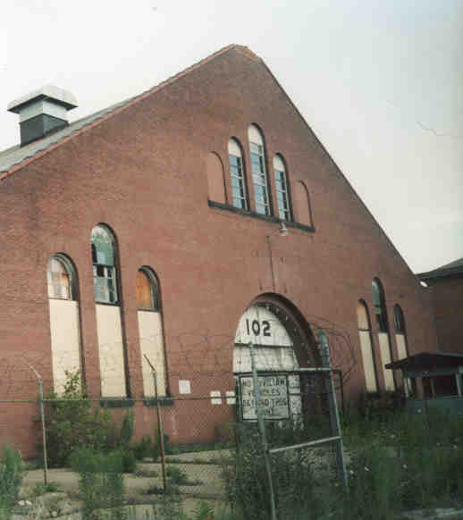
The most impressive building at Fort Hayes is the drill hall, a huge, airplane hangar-sized place located on the access road off of Cleveland Avenue, just past a big rusty sign that says "NO CIVILIAN VEHICLES BEYOND THIS POINT." The drill hall is also interesting for the fact that it's supposed to be haunted. The anxious ghost of a soldier in a World War Two uniform is sometimes sighted behind the drill hall. He fades away just when noticed. Supposedly, he is the ghost of a soldier who fell asleep on duty, was brought up on charges, and died mysteriously in jail. I've been at the Fort Hayes drill hall in the daytime, in the evening, and at night, and I've never seen him, but I'd still keep an eye open if I were you.
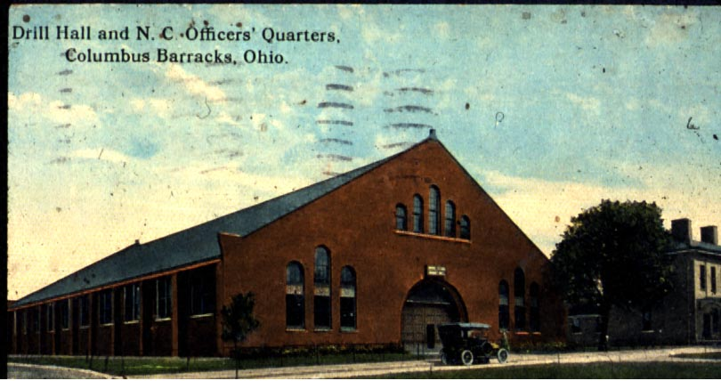
The Drill Hall in 1913
As you can see, the drill hall is Building 102, which makes it pretty obvious that it's located next to Building 103. Like 103, the last time I was there it had been securely sealed up.
The building was, obviously, used for drills and exercises. As recently as the 1950s the new recruits would be brought here first and lined up for their physicals, naked as jaybirds. At times chairs would be set up, along with a screen and an elevated projection booth, and movies would be shown for the enlisted men. Later on it was the motor pool, and even later, a general repair and metal shop.
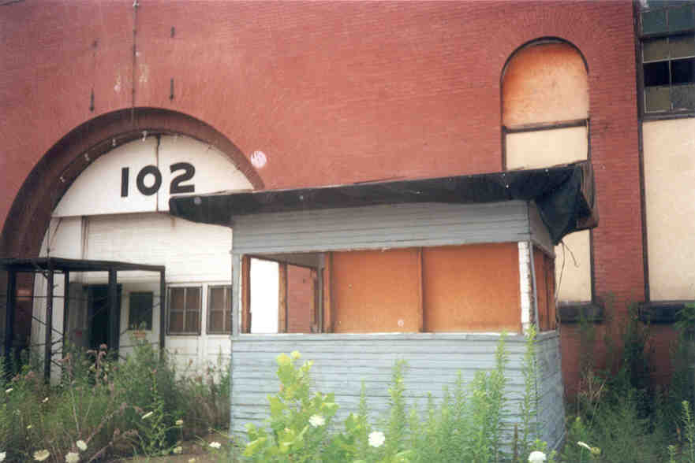
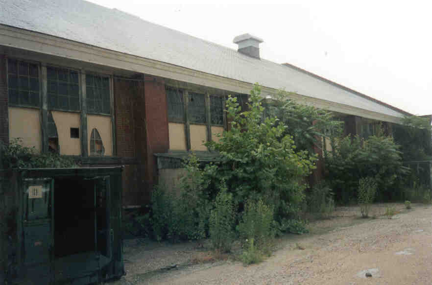
Past the guard booth outside you can walk around and take a look at all the camoflauged dumpsters outside--ammo lockers, maybe, or receptacles for explosive materials. Inside they smelled like fireworks, and I wouldn't want to light up a cigarette while I was camping out inside one.
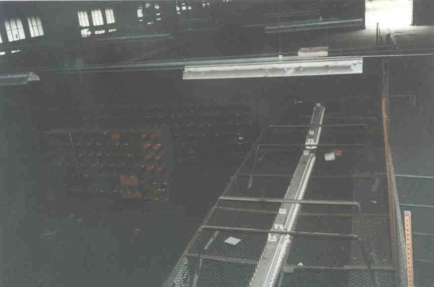
One of the times I visited the main door was open, letting in plenty of light. When those doors are closed it's pretty dark and gloomy inside. The main floor is the size of a football field, with a cold, grease-stained garage floor. They used to service army vehicles here, presumably after they stopped using it as a drill hall. Tool cages and work stations are built out onto the floor almost halfway to the big door.
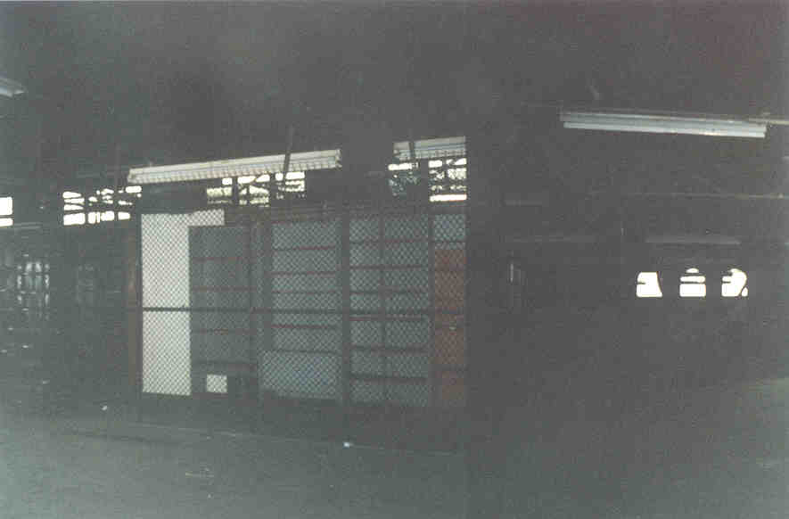
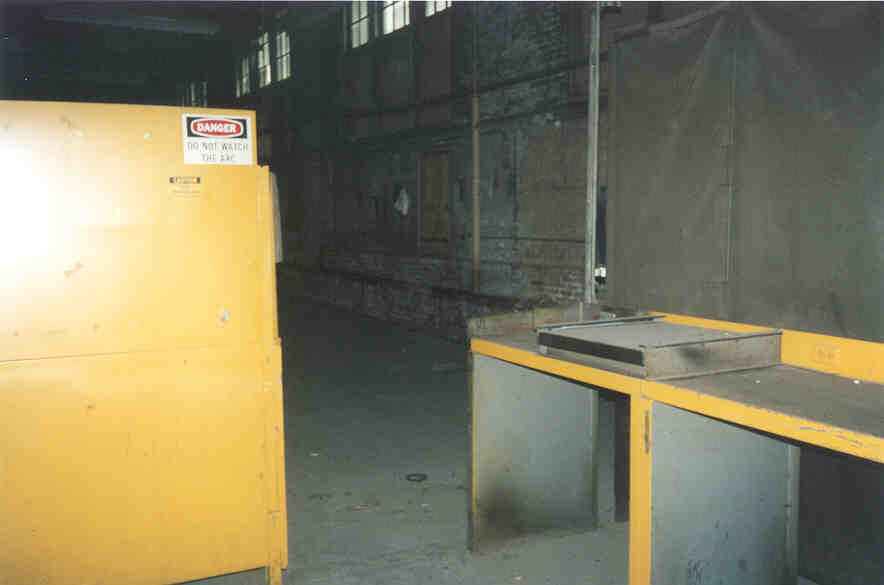
There's a welding station down here, as well as a big pegboard for tools with all their shapes painted on. I'll leave out the joke about Army intelligence. There were lots of colorful safety reminder signs hung up in the work area. Also, in one of the ground floor offices, we found this taped to the wall:
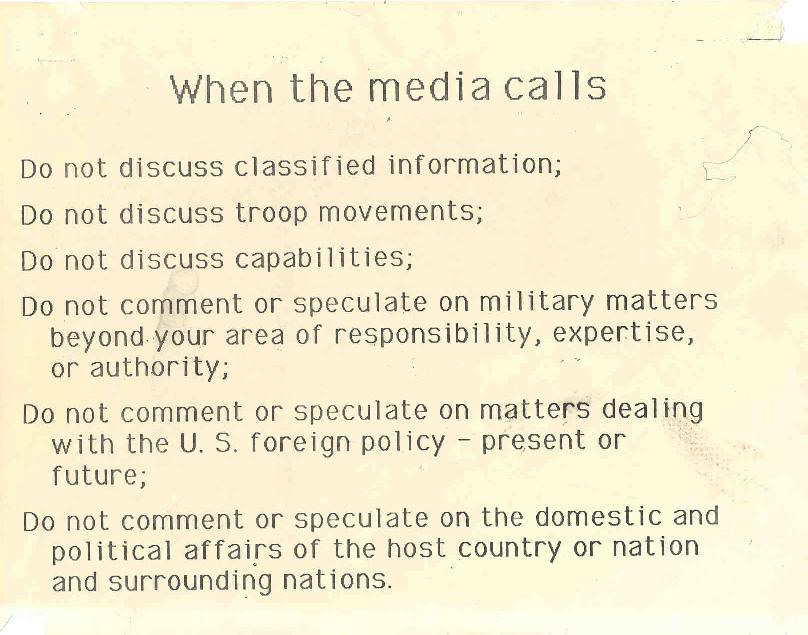
Next we went up a wide staircase and explored the upper level, which is sort of a platform with a couple of rooms at the very front of the drill hall. From up here you have a view of the whole place.
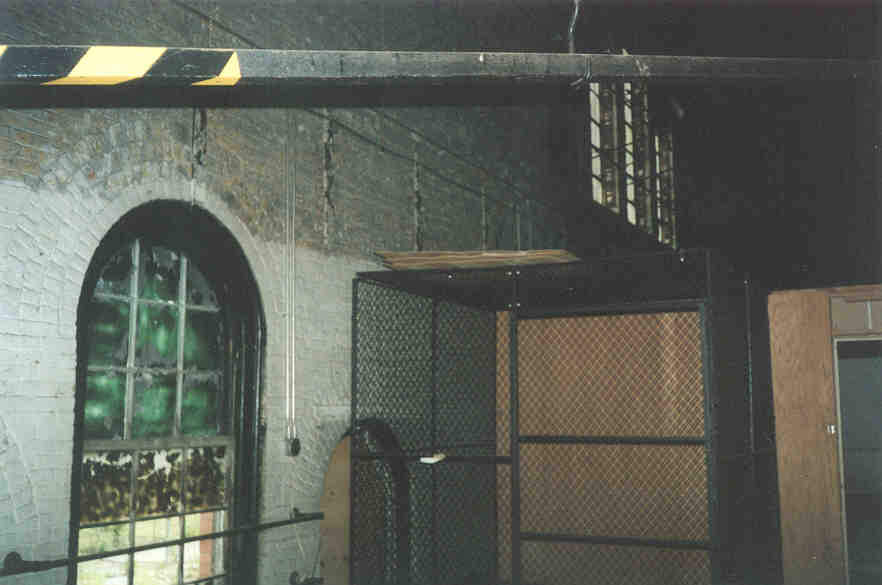
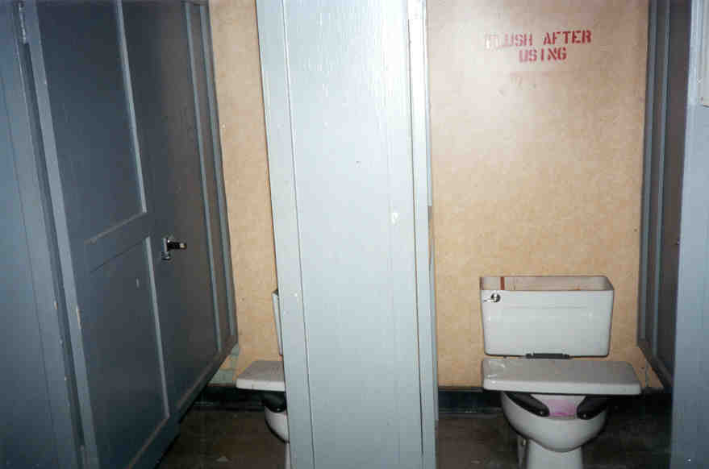
Interesting stuff. I took one of the safety signs home with me because it was just so damn cool. I think they might still use this place for storage from time to time, so be careful if you go see it.
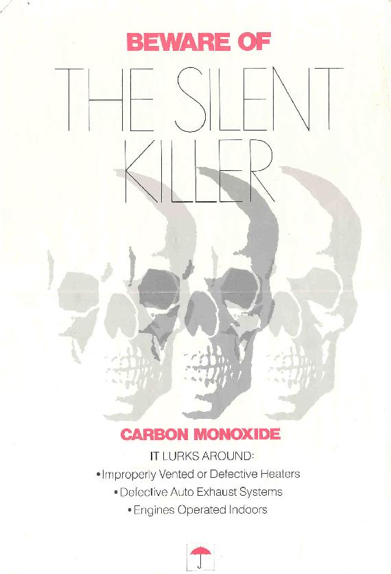
Back
Sources
Smith, Robin. Columbus Ghosts. Worthington, OH: Emuses, Inc., 2002. pp. 77-80.